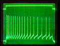

| Spike Toolbox |
|
Getting Started
Toolbox version 0.3
Welcome to the Spike Toolbox! This toolbox collects functions to generate and manipulate arbitrary spike trains. This topic contains an overview of the toolbox and what you can do with it.
 Ensuring the toolbox is correctly set upGenerating spike trainsThe toolbox Spike Train modelVisualisation and analysing spike trainsStimulation of physical devices
Ensuring the toolbox is correctly set upGenerating spike trainsThe toolbox Spike Train modelVisualisation and analysing spike trainsStimulation of physical devices
Ensuring the toolbox is correctly set up
The STWelcome function is your gateway to the Spike Toolbox. STWelcome will check that the toolbox is correctly configured, including compiling any .mex files required for the toolbox. Make sure you run STWelcome once, before using the toolbox for any work.
STWelcome will also display the toolbox documentation. See the STWelcome documentation for details.
Generating spike trains
Many type of spike trains can be created, using regular, poisson and gamma generative models. See STCreate, STInstantiate and STMap for detailed creation options.
For more complex spike train structures, several trains can be combined:
The toolbox Spike Train model
Spike trains are represented as an opaque data type (a spike train object) implemented as a MATLAB structure. Almost any required manipulation can be performed using toolbox functions; if you find yourself delving into the structures to do some task, something's gone wrong: either there's already a toolbox function that does what you want (see the function index) or else there should be -- tell the toolbox maintainers and they'll write one for you.
Internally, spikes are represented as lists of spike times. A matlab vector of either inter-spike intervals (ISIs) or spike times can be converted into a toolbox object using STCreateFromVector. Spikes from a toolbox object can be exported as a MATLAB vector using STGetSpikeTimes. Again, if you find yourself needing to do this then perhaps a new toolbox function is in order.
Conceptually, spike trains can exist as either abstract description of a desired frequency profile (a spike train "definition"), as a list of spike times generated from the frequency profile (a spike train "instance") or as a list of spikes mapped to a specific synapse and neuron address (a "mapped" spike train). Some manipulations can only be performed on particular "levels" of a spike train. See Spike Train levels for more information.
The STDescribe function will display detailed information about any object the toolbox knows about.
Visualising and analysing spike trains
The STPlot... familiy of functions will display a spike train in various ways:
Several toolbox functions are included for analysing spike trains:
Stimulation of physical devices
The toolbox is especially suited for batch-mode stimulation and monitoring of physical devices that communicate with series of spikes. STPciaerImport and STPciaerExport can be used to convert spike train objects to and from formats used by the PCI-AER system, developed jointly by the Istituto Superiore di Sanità (Vittorio Dante and Paolo Del Giudice) and by the Institute of Neuroinformatics (Adrian Whatley, Gerd Dietrich and other members of the Institute). STStimulate is a work-horse function that performs stimulation and monitoring directly using toolbox spike train objects.
The toolbox also has rudimentary functionality for integration with Matthias Oster's real-time spike server system. See STStimServer for more information.
The toolbox uses a very flexible addressing scheme for mapping spike trains to physical addresses. This scheme allows arbitrary multiple dimensions of conceptual addressing, as well as arbitrary mapping to binary address fields for physical stimulation. Flexibility and power bring complexity along for the ride; see Setting Up Toolbox Addressing for a full description of managing the toolbox addressing configuration.
|
|
Tutorial |